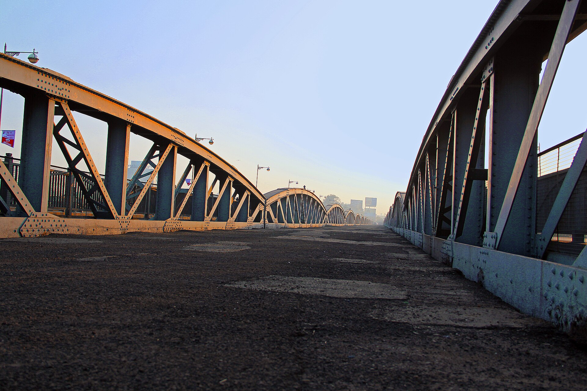
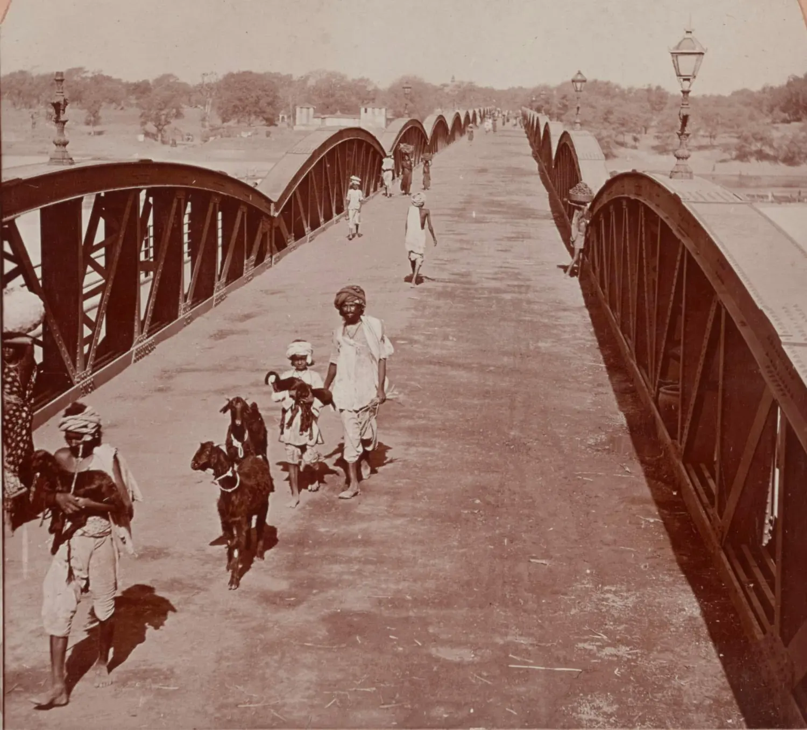
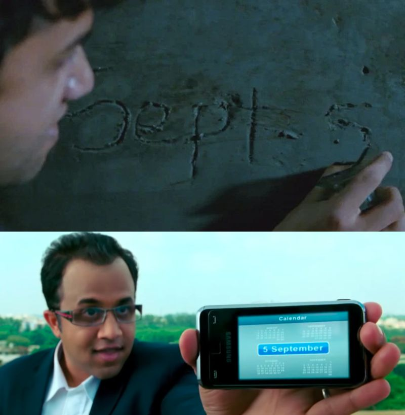
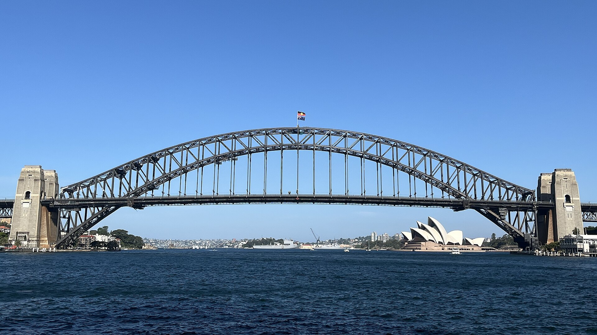
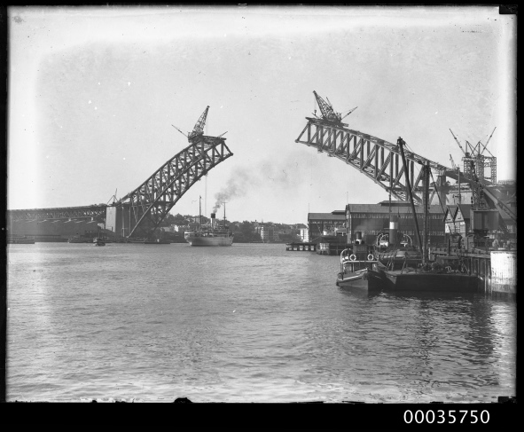
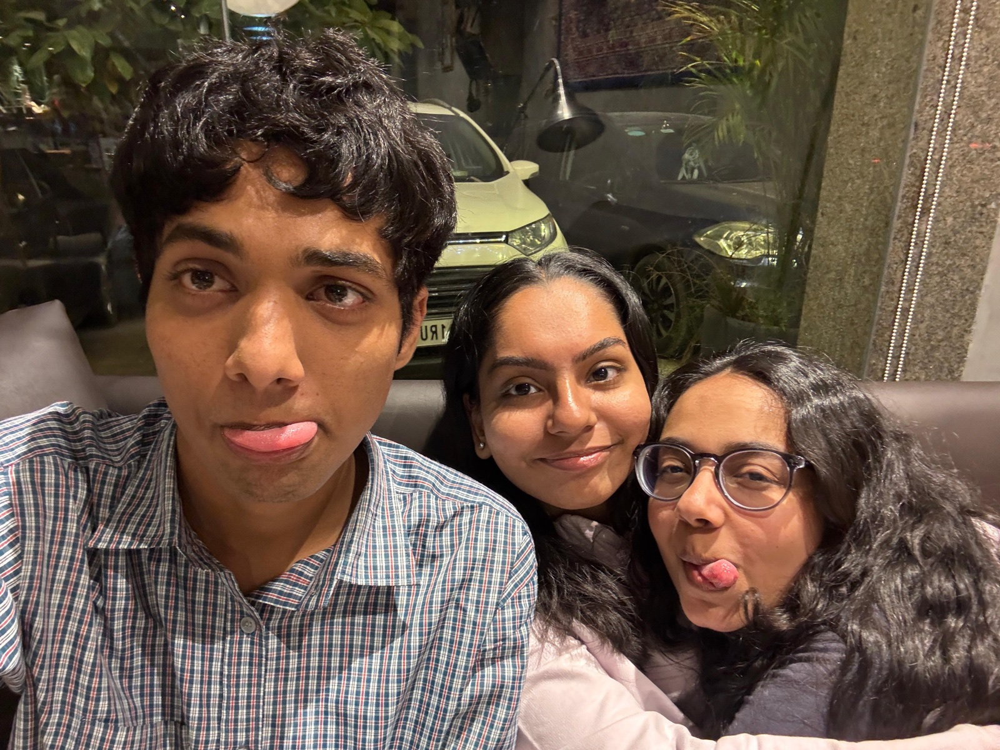

then 1901now 2011archive note 01 / ahmedabad, india
ellis
bridge
a crossing that outlived the century around it. different photographs, one familiar name.
slide to see the yearsa social time capsule
write a post now and choose when it appears. years later, the same moment has a different meaning.
enter nostawrite a post while the moment is still fresh. add a photograph, choose a date months or years ahead, then leave it alone. the post waits privately until that day arrives.

a date set years earlier sends friends looking for rancho.
nosta takes that feeling and gives it a place to live. make the post today. choose the day it comes back. let time give it a different meaning.
from the archive
drag to compare older photographs with newer views. each pair shows a place from different viewpoints.


then 1901now 2011a crossing that outlived the century around it. different photographs, one familiar name.
slide to see the yearsan unfinished arch became a city's silhouette. the harbour has watched every chapter.
slide to see the years

then 1930now 2025photographs are from different viewpoints; the swipe explores time rather than an exact frame match. view image credits
post now / publish later
add a photo and a note. choose a future date. the post stays private until then.
enter nosta
heiley came back after a year. on 30 november, our og trio finally went to abhiyakti together. since then, all three of us have been waiting to meet again and hang out.
18 seconds ago
after it arrives
leave a thought on a published post, or keep the conversation between two people in messages.
ṉ/heileyjoshi miss you guys 🥹
ṉ/pankiniii u had a funny haircut, i still remember lol
ṉ/sahil_bhonsale u guys goofy ahh bwahahha
ṉ/jainisomani cuteeee